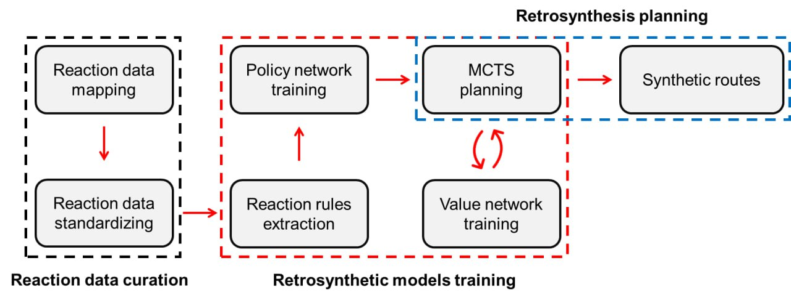

SynTool¶
SynTool is a tool for reaction data curation, reaction rules extraction, retrosynthetic models training, and retrosynthesis planning. This is a multilayered software allowing for processing any source of reaction data and building a ready-to-use retrosynthesis planner.
Introduction¶
SynTool combines Monte-Carlo Tree Search (MCTS) with graph neural networks for the prediction of reaction rules and synthesizability of intermediate products. SynTool can be directly used for retrosynthesis planning with pre-trained policy/value neural networks (planning mode) or can be trained from scratch for the custom reaction data using an automated end-to-end training pipeline (training mode).
Software¶
SynTool is based on the original Python packages for reaction chemoinformatics. Here is the core software:
CGRTools– a core open-source library for reaction data processing and manipulation.
chython– this library is a fork of CGRtools and includes some additional functionalities.
chytorch-rxnmap– a package for reaction atom-to-atom mapping.
Also, SynTool includes some original modules, that can also be used separately:
Reaction standardization module – an original module in SynTool for reaction standardization.
Reaction filtration module – includes the collection of original reaction filters for discarding erroneous and suspicious reactions.
Reaction rules extraction module – an original module of SynTool for reaction rules extraction.
Machine learning module - a module for policy and value neural network training. Based on the PyTorch framework.
SynTool pipeline¶
SynTool is a multilayered software for the computer-aided synthesis planning. It includes original modules for reaction data curation, reaction rules extraction, and retrosynthesis planning with Monte-Carlo tree search (MCTS) algorithm coupled with neural networks for node expansion and evaluation in MCTS. SynTool can be used for training retrosynthetic models from any source of reaction data. Below, the main steps of this pipeline are listed.
1. Data download
Reaction data (USPTO dataset) and other supplementary data for retrosynthetic models training and retrosynthesis planning can be easily downloaded. See the details in Data download.
2. Reaction data mapping
Reaction mapping is a necessary step in reaction data curation. See the details in Reaction mapping.
3. Reaction data standardization
Reaction standardization is a necessary step in reaction data curation. It requires already mapped reactions. See the details in Reaction standardization.
4. Reaction data filtration
Reaction data filtration ensures the validity of reaction rules extracted from the reactions. See the details in Reaction filtration.
5. Reaction rules extraction
Reaction rules should be extracted from the high-quality reaction data prepared by the data curation steps listed above. See the details in Reaction rules extraction.
6. Policy network training
Policy network training is needed for the node expansion in the tree search algorithm. See the details in Policy network.
7. Value network training
Value network training is needed for the node evaluation in the tree search algorithm. See the details in Value network.
8. Retrosynthesis planning
After the preparation of the reaction rules and trained retrosynthetic model, the retrosynthesis planning of target molecules can be performed. See the details in Retrosynthesis planning.